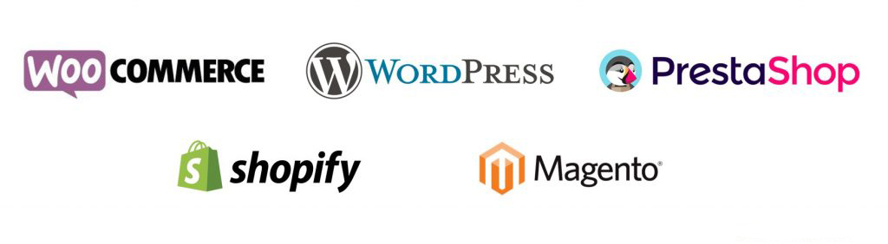

Estimado estudiante, bienvenido a la unidad 3: Comercio electrónico de la asignatura Aplicaciones y su
impacto comercial. Inicia la revisión de la unidad reflexionando sobre lo siguiente:
A finales de la década de los años noventa, con el desarrollo de las tecnologías informáticas y la
expansión
de las telecomunicaciones se fortaleció un proceso de globalización e interdependencia económicas, que vio
el
nacimiento de una forma novedosa de realizar actividades comerciales, y se creó un nuevo proceso de oferta y
demanda, donde tanto proveedores como clientes situaron sus transacciones a través de medios electrónicos,
principalmente en Internet; así surgieron las empresas digitales y los consumidores digitales, cuyas
actividades dan vida al comercio electrónico. (Oropeza, 2018)
Objetivo de unidad
Identificar la importancia que tiene el comercio electrónico en la actualidad, con la finalidad de
distinguir
su papel dentro de la economía del mundo actual.
¡Bienvenidos a esta unidad!
Incidente crítico
Retoma el caso hipotético de que has sido contratado como consultor de Comercio Electrónico en una
importante
empresa cuyo giro es una sociedad financiera de objeto múltiple (Sofom) y están interesados en desarrollar
las
aplicaciones necesarias para digitalizar y automatizar sus procesos con la intención de lograr un impacto
comercial favorable para lo cual deberás llevar a cabo una revisión y análisis del entorno y los procesos de
la empresa con el fin de emitir una recomendación para el desarrollo de las aplicaciones necesarias.
¿Qué conocimientos y habilidades requieres para cumplir con las expectativas?
Incidente crítico
Retoma el caso hipotético de que has sido contratado como consultor de Comercio Electrónico en una
importante
empresa cuyo giro es una sociedad financiera de objeto múltiple (Sofom) y están interesados en desarrollar
las
aplicaciones necesarias para digitalizar y automatizar sus procesos con la intención de lograr un impacto
comercial favorable para lo cual deberás llevar a cabo una revisión y análisis del entorno y los procesos de
la empresa con el fin de emitir una recomendación para el desarrollo de las aplicaciones necesarias.
¿Qué conocimientos y habilidades requieres para cumplir con las expectativas?
3.2 Importancia
A partir de su inicio en 1995, el comercio electrónico ha crecido en Estados Unidos, de un inicio estable a
un negocio de ventas al detalle de $225 mil millones y a un monstruo de $3.6 billones de dólares en
transacciones de negocio a negocio; provocando un enorme cambio en empresas comerciales y mercados, así como
en el comportamiento de los consumidores. Las economías y las empresas comerciales de todo el mundo, Europa,
Asia y Latinoamérica, se están viendo afectadas de la misma manera. Se proyecta que durante los próximos
cinco
años, el comercio electrónico (en todas sus formas) seguirá creciendo con cifras de dos dígitos, con lo cual
se convertirá en la forma de comercio de más rápido crecimiento en el mundo. Al igual que los automóviles,
aeroplanos y dispositivos electrónicos definieron el siglo xx, el comercio electrónico de todo tipo definirá
el comercio y la sociedad del siglo XXI. Tanto las empresas comerciales establecidas (como Wal-Mart,
JCPenney
y General Electric), como las nuevas compañías emprendedoras (como Google, Amazon, E*Trade, MySpace,
Facebook,
Photobucket y YouTube) se están orientando rápidamente hacia una economía y sociedad basadas en el comercio
electrónico. Los estudiantes de negocios y tecnología de la información necesitan una base sólida en el
comercio electrónico, para poder ser administradores efectivos y exitosos en la siguiente década. (Laudon
& Guercio Traver, 2009)
3.3 Ventajas y desventajas
Las ventajas del comercio electrónico son muy numerosas frente al comercio tradicional. También ofrece
muchas
oportunidades para los retailers o comerciantes no sólo para tener un canal adicional de ventas, sino
también
para abrir nuevos mercados, promocionar sus productos y ampliar sus posibilidades de negocio. En este
sentido,
el comercio electrónico supone una ventaja competitiva y una oportunidad de negocio muy interesante.
El comercio electrónico al consumidor final (B2C) está experimentando un excelente desarrollo y todavía
quedan muchas oportunidades por explotar. Aunque no podemos perder de vista que todavía queda mucho por
hacer,
iniciar un negocio online o adaptar el actual aprovechando todas las posibilidades del eCommerce.
Da clic en cada uno de los títulos para obtener más
información.
Algunas de las ventajas del comercio electrónico frente al comercio tradicional son las
siguientes:
Superación de las limitaciones geográficas.
Obtención de mayor número de clientes tanto online como offline gracias al aumento de
visibilidad que permite Internet.
Costo de inicio y de mantenimiento mucho menor que un negocio tradicional.
Mayor facilidad de mostrar los productos para el empresario.
Mayor facilidad y rapidez para encontrar los productos para el comprador.
Ahorro de tiempo a la hora de realizar las compras para el comprador.
Optimización del tiempo dedicado el negocio y a la atención al cliente para el empresario.
Facilidad para implementar y desarrollar estrategia de marketing basadas en descuentos,
cupones,
lotes, etc.
Posibilidad de ofrecer mucha más información al comprador.
Facilidad para ofrecer una comparativa entre productos, incluyendo características y precios.
Seguramente habrá muchas más ventajas del comercio electrónico ya que a medida que pasa el tiempo
y
la tecnología evoluciona, las compras online cada vez suponen un mayor porcentaje de las
adquisiciones que hacen los usuarios.
Sin embargo, no podemos dejar de considerar algunas desventajas del eCommerce que deben ser
tenidas
en cuenta antes de iniciar o ampliar cualquier negocio. Son las siguientes:
La competencia es mucho mayor, ya que cualquiera puede poner en marcha un negocio de comercio
electrónico (al menos en teoría).
Todavía hay muchos consumidores reacios a comprar sin ver el producto y que no confían en los
pagos online.
Los gastos de envío son caros cuando el volumen de negocio es pequeño, y esto es una gran
desventaja para los negocios pequeños.
La fidelización del cliente es mucho más difícil y exige una estrategia profesional.
Promocionar una tienda online exige más trabajo personal que promocionar una tienda a pie de
calle.
La seguridad del sitio puede dar muchos quebraderos de cabeza al empresario.
No todos los productos que se pueden vender en línea son igual de rentables, y hay que valorar
muy bien la estrategia de comercialización.
Los consumidores quieren tenerlo todo: el mejor precio, el mejor servicio y una atención
personalizada. Competir en estos términos es cada vez más complicado para las pequeñas empresas
frente a las grandes.
En definitiva, el eCommerce es una gran oportunidad, pero es necesario valorar las ventajas del
comercio electrónico y sus contras para sólo lanzarse si realmente tenemos una buena propuesta de
negocio. (Rodriguez, 2013)
3.4 Aplicaciones
La comercialización digital se lleva a cabo a través de diferentes plataformas que actúan como
intermediarias
entre la empresa y el cliente. Estas plataformas favorecen las estrategias y acciones del negocio:

Figura 1. Plataformas para el Comercio Electrónico (Espinosa, 2019).
Da clic en cada uno de los títulos para obtener más
información.
Es una de las plataformas más utilizadas en comercio electrónico, ya que es un plugin de código
abierto para WordPress. Este CMS favorece la gestión de contenidos junto a las funcionalidades
de
una tienda virtual. WordPress nació como plataforma para blogging y webs informativas pero poco
a
poco su plugging WooComerce ha ido evolucionando y mejorando hasta convertirse en una de las
principales opciones para ecommerces pequeños y medianos.
Tiene una gran comunidad detrás, además de multitud de pluggings y plantillas con diseños de
todo
tipo.
PrestaShop
Es otra de las plataformas más utilizadas para la creación de tiendas virtuales pequeñas y
medianas. A diferencia de WooCommerce de WordPress, PrestaShop es un CMS desarrollado
específicamente para el comercio electrónico. PrestaShop es fácil de utilizar e intuitivo,
cuenta
con miles de plantillas de diseño y módulos para personalizar tu tienda online en base a tus
necesidades.
Shopify
Esta plataforma cuenta con una velocidad característica y varias herramientas de marketing y un
hosting optimizado para el comercio electrónico. Shopify es una opción que no requiere de muchos
conocimientos y en la que no te tienes que preocupar por actualizaciones, ya que se comercializa
bajo un servicio SaaS (software as a services) y solo pagas por su uso.
Magento
Magento es una de las principales opciones para tiendas online medianas y grandes. Permite
crear
la totalidad de un sitio web y controlar todas las funcionalidades disponibles de una tienda
virtual. Cuenta con diversas plantillas de diseños personalizados, opción de multitienda
integrada
para diferentes países y monedas, gestión total de catálogo y productos, control de stock…
además
de herramientas de marketing.
Desarrollo a la medida
Para proyectos importantes, de cierta envergadura y sobretodo con necesidades muy particulares,
es recomendable realizar un desarrollo a la medida en comercio electrónico. Para ello es
necesario
contar con agencias especializadas ya que requiere de varios perfiles profesionales como
backends,
frontends, diseñadores, UX, etc. Es la solución perfecta para cuando necesitas una tienda online
totalmente a la medida.
Estas son las plataformas más reconocidas y utilizadas, pero existen otras como Bigcommerce,
Volusion, Squarespace, 3dcart, Square, Wecwid, Webflow, Weebly, Bigcartel o Wix. Casi todas
ellas
cuentan con una prueba gratuita para comprobar las funcionalidades de e-commerce.
Principales MarketPlaces
Además de desarrollar una tienda online propia, existen otras opciones como crear una tienda
dentro de un Marketplace. ¿Qué es un market place? Es una plataforma en la que dentro de ella
puedes darte de alta como vendedor y crear una tienda online. Algunos ejemplos de Marketplace en
donde poder crear tu tienda: Amazon, Ebay, AliExpress, Rakuten, Mercado Libre.
Figura 2. Principales MarketPlaces (Espinosa, 2019).
3.5 Comunicación
Un negocio online ofrece una serie de beneficios al cliente que no puede obtener en el mundo offline: la
inmediatez, la comodidad de no tener que salir de casa para encontrar el producto que necesitas, la agilidad
de poder conectarte desde cualquier dispositivo móvil aunque estés en el tren camino del trabajo, hacer
comparativas de productos y precios a golpe de clic.
Todos estos beneficios son de sobra conocidos por los usuarios y es lo que esperan al entrar en un centro
comercial online o en un comercio electrónico y esto no constituye un valor añadido para el navegante.
Hay que suplir la falta de trato directo con el cliente ganándose su confianza. Las desventajas con los
negocios tradicionales es que no se pueden ver los productos, sentir el tacto de los artículos, probar el
funcionamiento o preguntar al dependiente. Estos factores son fundamentales y decisorios a la hora de
realizar
un proceso de compra.
Por tanto la comunicación de un comercio electrónico debe basarse en suplir las carencias de no comprar un
producto físicamente. Y es aquí, en este punto, donde se debe sorprender al usuario a través de una buena
comunicación.
Hay que suplir la falta de trato directo con el cliente, ganándose su confianza por lo que la base de la
comunicación siempre tiene que ir orientada a ganar esta confianza del cliente. El primer paso es saber
comunicar “quiénes somos” y quién esta detrás de esa página web. Igual que en una tienda física es muy
importante la figura del comerciante que nos atiende, en el mundo online también tenemos que darnos a
conocer.
Herramientas Online del e-commerce
Usar las herramientas online a nuestro alcance para ganarnos esa confianza es fundamental:
Los vídeos son una vía de comunicación muy eficaz, para que el cliente pueda observar el objeto por
todos
sus ángulos y ver sus utilidades.
Las redes sociales también son una vía de comunicación que permite acercarte al cliente de un modo más
cercano. Eso sí, tienes que saber estar en redes sociales y tener una presencia activa, no vale con abrir
un
perfil y echarte a dormir.
Tener una aplicación móvil o una web completamente manejable. Este factor es muy importante en el
e-commerce porque cada vez más, hemos notado un aumento en las compras que se realizan a través de móviles
y
tablets. No tener una web optimizada o una aplicación puede suponer una pérdida de clientes y por tanto
una
pérdida económica.
E-mail marketing personalizado y cero spam. Segmentar a tu cliente es fundamental para ofrecerle
aquellas
cosas que le interesan. No existen dos personas iguales y los gustos son diversos. Hay que afinar mucho el
mensaje que se envía y conocer a grandes rasgos quién hay detrás de una cuenta de e-mail.
Sellos de confianza online. Los sellos de confianza son otro pequeño valor que los usuarios tienen en
cuenta, es una forma de certificar que detrás hay una empresa sólida.
En definitiva una buena comunicación B2C (Business to Consumer) para los clientes de un e-commerce debe
basarse en:
La honestidad: comunicar basándonos en la verdad más absoluta, tanto sobre gastos de envío, condiciones
o
utilidades de un producto. Ser transparentes generará la confianza de tu cliente.
Opiniones y testimonios reales: comunicar a través de las experiencias de otros es la mejor carta de
presentación. Los productos que tienen opiniones de terceros tienen mejor conversión que aquellos que aún
no
tienen testimonios reales.
Valores añadidos: el mundo del comercio online ha crecido mucho en los últimos años. Para poder llegar a
más personas hay que ofrecer valores añadidos que atraigan y fidelicen a tu cliente. Gastos de envío
gratuitos, gratificar a las personas que te dan su opinión, habilitar un servicio de atención al cliente
online etc.
Al final la mejor arma de comunicación que podemos tener es una adecuada política de atención al cliente.
Que
sepa que estamos a su disposición y que podemos resolver sus dudas. (Manzano, 2017)
3.5 Comunicación
Un negocio online ofrece una serie de beneficios al cliente que no puede obtener en el mundo offline: la
inmediatez, la comodidad de no tener que salir de casa para encontrar el producto que necesitas, la agilidad
de poder conectarte desde cualquier dispositivo móvil aunque estés en el tren camino del trabajo, hacer
comparativas de productos y precios a golpe de clic.
Todos estos beneficios son de sobra conocidos por los usuarios y es lo que esperan al entrar en un centro
comercial online o en un comercio electrónico y esto no constituye un valor añadido para el navegante.
Hay que suplir la falta de trato directo con el cliente ganándose su confianza. Las desventajas con los
negocios tradicionales es que no se pueden ver los productos, sentir el tacto de los artículos, probar el
funcionamiento o preguntar al dependiente. Estos factores son fundamentales y decisorios a la hora de
realizar
un proceso de compra.
Por tanto la comunicación de un comercio electrónico debe basarse en suplir las carencias de no comprar un
producto físicamente. Y es aquí, en este punto, donde se debe sorprender al usuario a través de una buena
comunicación.
Hay que suplir la falta de trato directo con el cliente, ganándose su confianza por lo que la base de la
comunicación siempre tiene que ir orientada a ganar esta confianza del cliente. El primer paso es saber
comunicar “quiénes somos” y quién esta detrás de esa página web. Igual que en una tienda física es muy
importante la figura del comerciante que nos atiende, en el mundo online también tenemos que darnos a
conocer.
Herramientas Online del e-commerce
Usar las herramientas online a nuestro alcance para ganarnos esa confianza es fundamental:
Los vídeos son una vía de comunicación muy eficaz, para que el cliente pueda observar el objeto por
todos
sus ángulos y ver sus utilidades.
Las redes sociales también son una vía de comunicación que permite acercarte al cliente de un modo más
cercano. Eso sí, tienes que saber estar en redes sociales y tener una presencia activa, no vale con abrir
un
perfil y echarte a dormir.
Tener una aplicación móvil o una web completamente manejable. Este factor es muy importante en el
e-commerce porque cada vez más, hemos notado un aumento en las compras que se realizan a través de móviles
y
tablets. No tener una web optimizada o una aplicación puede suponer una pérdida de clientes y por tanto
una
pérdida económica.
E-mail marketing personalizado y cero spam. Segmentar a tu cliente es fundamental para ofrecerle
aquellas
cosas que le interesan. No existen dos personas iguales y los gustos son diversos. Hay que afinar mucho el
mensaje que se envía y conocer a grandes rasgos quién hay detrás de una cuenta de e-mail.
Sellos de confianza online. Los sellos de confianza son otro pequeño valor que los usuarios tienen en
cuenta, es una forma de certificar que detrás hay una empresa sólida.
En definitiva una buena comunicación B2C (Business to Consumer) para los clientes de un e-commerce debe
basarse en:
La honestidad: comunicar basándonos en la verdad más absoluta, tanto sobre gastos de envío, condiciones
o
utilidades de un producto. Ser transparentes generará la confianza de tu cliente.
Opiniones y testimonios reales: comunicar a través de las experiencias de otros es la mejor carta de
presentación. Los productos que tienen opiniones de terceros tienen mejor conversión que aquellos que aún
no
tienen testimonios reales.
Valores añadidos: el mundo del comercio online ha crecido mucho en los últimos años. Para poder llegar a
más personas hay que ofrecer valores añadidos que atraigan y fidelicen a tu cliente. Gastos de envío
gratuitos, gratificar a las personas que te dan su opinión, habilitar un servicio de atención al cliente
online etc.
Al final la mejor arma de comunicación que podemos tener es una adecuada política de atención al cliente.
Que
sepa que estamos a su disposición y que podemos resolver sus dudas. (Manzano, 2017)
Oropeza , D. K. (2018). Instituto de Investigaciones Jurídicas - Universidad Nacional Autónoma de México.
La competencia económica en el comercio electrónico y su protección en el sistema jurídico mexicano.
Recuperado de https://archivos.juridicas.unam.mx/www/bjv/libros/10/4667/4.pdf
 Presentación de
unidad
Presentación de
unidad Objetivo de unidad
Objetivo de unidad Da clic en cada uno de los títulos para obtener más
información.
Da clic en cada uno de los títulos para obtener más
información. Fuentes de consulta
Fuentes de consulta